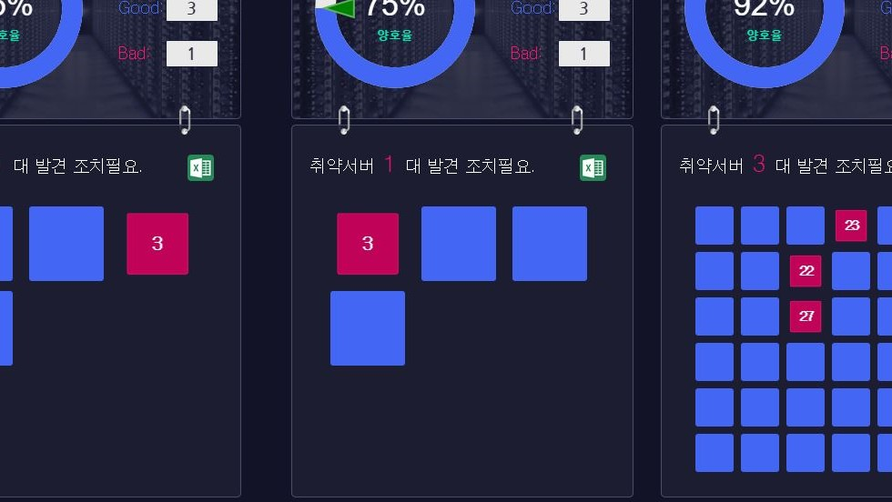
취약점을 한눈에 확인
빨간색은 취약 상태를 나타내며, 파란색은 양호상태를 나타냅니다. 취약상태를 클릭하여 진단정보를 확인 할 수있습니다.
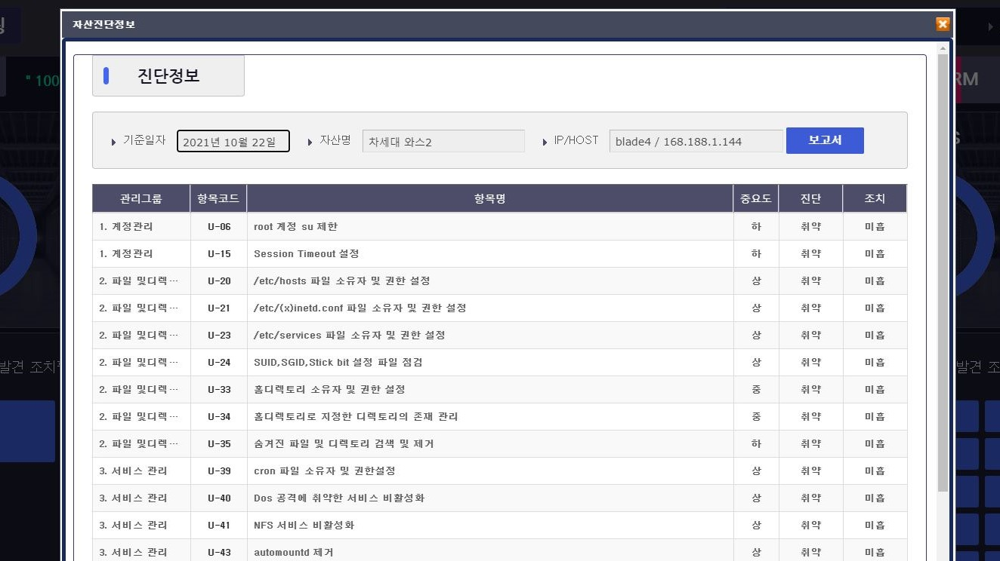
진단정보 확인
진단정보의 항목코드를 클릭하면, 보다 자세한 진단 가이드를 확인 할 수 있습니다. 보고서 버튼을 눌러 .xlsx로된 파일로 진단 항목을 한번에 출력해 볼 수 있습니다.
BingoCVM의 사용자는 대시보드를 통해 서버의 취약한 부분을 한눈에 파악 가능하며, BingoCVM의 다양한 기능들을 통해 효과적이고 편리하게 관리 할 수 있습니다. 다음 아래에 BingoCVM의 기능들을 정리해 놓았습니다.
BingoCVM은 편리하고 직관적인 단순한 구조의 사용자 인터페이스를 제공합니다. 상시 모니터링이 가능하며 효과적인 진단 관리와 취약 상황 파악이 가능합니다. 버튼 클릭 한 번으로 원하는 정보와 기능을 쉽게 얻어보세요.
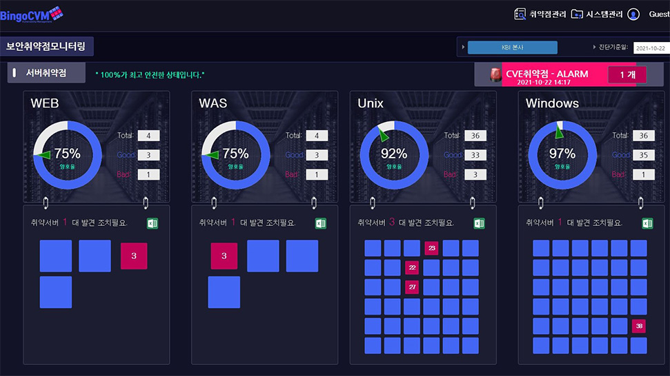

빨간색은 취약 상태를 나타내며, 파란색은 양호상태를 나타냅니다. 취약상태를 클릭하여 진단정보를 확인 할 수있습니다.

진단정보의 항목코드를 클릭하면, 보다 자세한 진단 가이드를 확인 할 수 있습니다. 보고서 버튼을 눌러 .xlsx로된 파일로 진단 항목을 한번에 출력해 볼 수 있습니다.
BingoCVM은 기술적 취약점, 관리적 취약점, 물리적 취약점, CVE 취약점 진단을 제공합니다. 각 항목을 그래프로 확인하고 각 항목별 중요도를 확인해 관리를 도와드립니다.
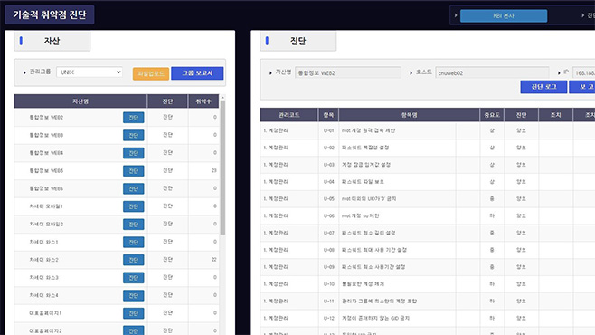
OS, Web/Was, DBMS, Network, Security 등의 자산 취약점 진단관리부터 진단 조치 상태 편집 기능 (완료, 미흡, 예외), 계정 관리, 접근 관리, 옵션 관리, 패치 관리, 로그 관리를 제공합니다.
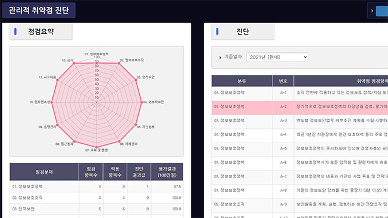
점검 분야에 대한 항목을 설정하고 진단 결과가 점수화 됩니다. 평가 결과 그래프 표현 및 요약을 통해 보호정책, 교육, 접근 통제 관리를 할 수 있습니다.
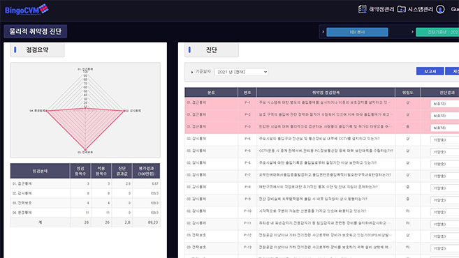
취약점 점검 항목 위험도(상/중/하) 평가와 진단 결과 (양호/취약/부분 만족) 평가를 할 수 있습니다. 접근, 감시, 환경 통제를 그래프로 보여줍니다.
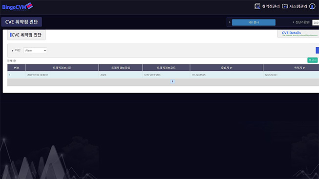
IT 시스템제조사의 알려진 취약점인 CVE취약점을 IPS/TMS 연동으로 실시간 로그 분석이 가능합니다. CVE 로그와 보안 로그의 상관 분석, 실제 침해사고, IP 탐지 및 진단이 가능합니다.
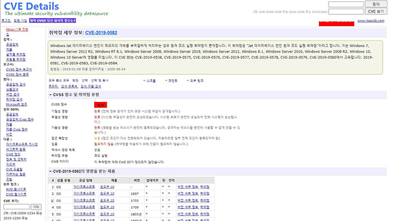
트래픽 경보 및 CVE 코드 확인 후 CVE 코드를 클릭하면 CVE Details 사이트와 연결되며 해당 코드의 정보를 조회 할수 있습니다.
약점 진단 자동화는 위협에 대한 신속하고 정확한 대응 및 체계적인 관리를 제공합니다. 수동 업무를 최소화하여 오탐/미탐 발생 가능성을 줄이며 진단 비용 및 시간을 절약합니다.
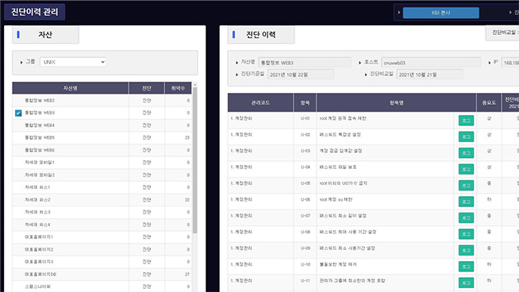
현재 및 과거 진단이력 결과를비교할 수 있습니다. 진단 비교일을 설정하면 취약상태 항목에 하이라이트가 들어옵니다.
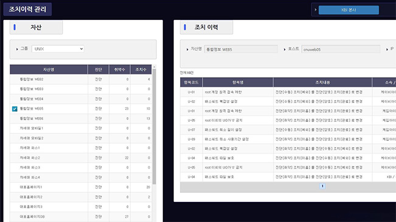
자산별 취약 및 조치 기록을 확인을 하세요. 취약 항목별 조치내용 확인과 조치자 및 조치일시 확인이 가능합니다.
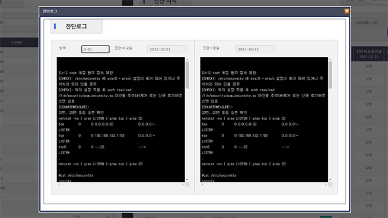
진단 로그 확인 및 증적관리 기능을 제공합니다. 로그 뷰어를 통한 상세 내용을 확인하세요. 진단 비교일 설정 및 로그 비교가 가능합니다.
취약점 통합 관리를 통해 시스템 관리자의 업무 효율성을 향상시키며, IT 시스템의 안정적 운영 및 사고 예방을 지속적으로 보장받을 수 있습니다.
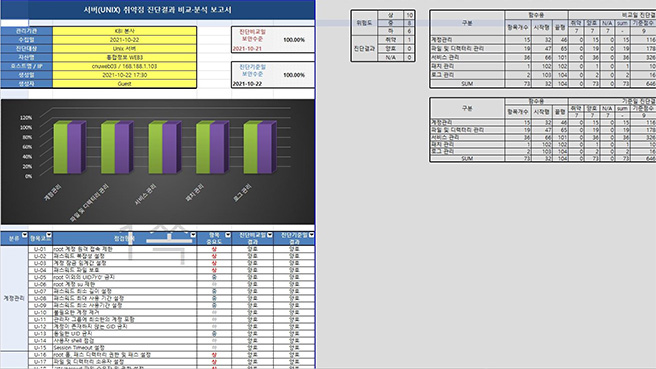
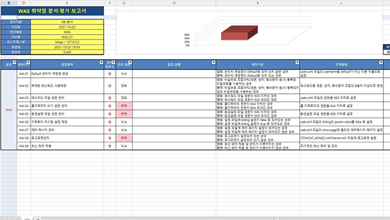
BingoCVM 데모를 이용해 보세요. 앞서말한 기능들을 미리 이용해 보실 수 있습니다.
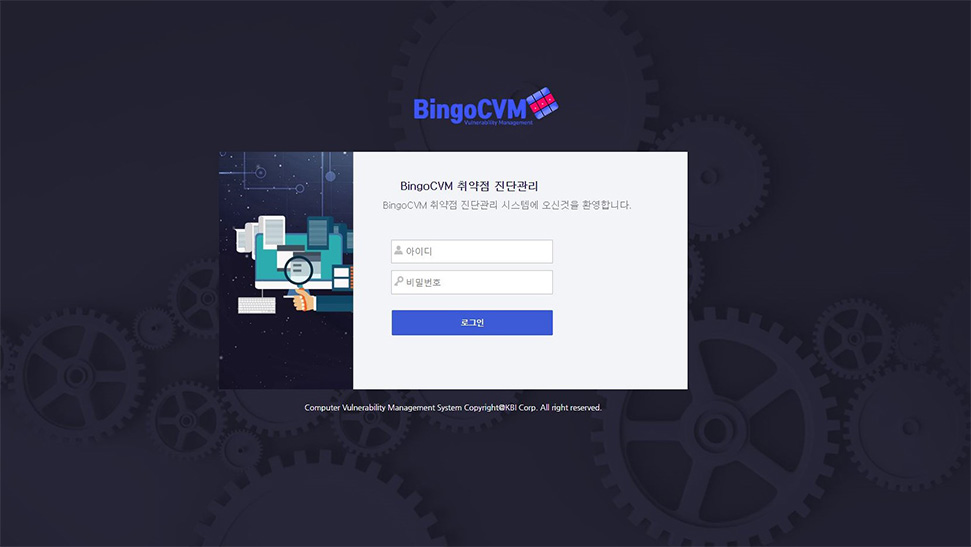
데모사이트 이용 문의 Tel. 010-5458-9315 Email. newkbi@kbisys.com